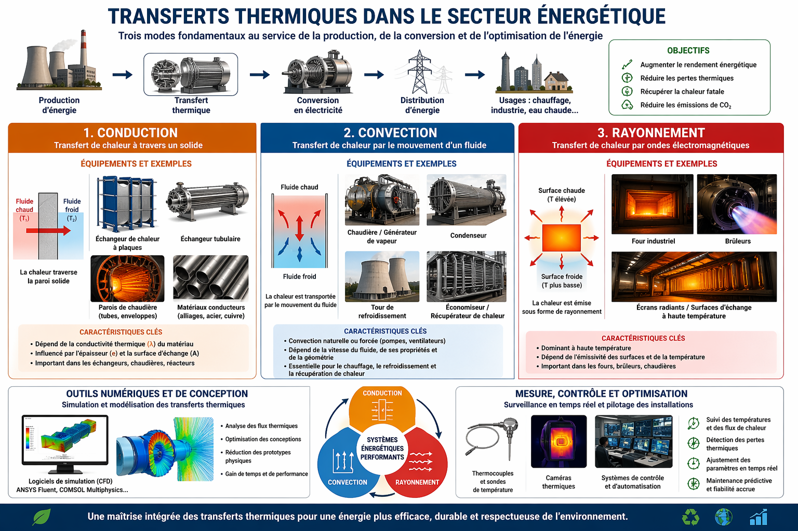

Dans le secteur énergétique, les transferts thermiques constituent un pilier essentiel pour la production et l’optimisation de l’énergie. Ils reposent sur trois modes fondamentaux — la conduction, la convection et le rayonnement — et chaque catégorie mobilise des équipements spécifiques adaptés à ces mécanismes.
Définition : transfert de chaleur à travers un matériau solide.
Dans ce domaine, les équipements clés incluent les échangeurs de chaleur à plaques ou tubulaires, où la chaleur traverse des parois métalliques conductrices entre deux fluides. Les matériaux conducteurs (comme les alliages métalliques utilisés dans les chaudières ou les réacteurs) sont optimisés pour maximiser ce transfert. La performance dépend fortement de la conductivité thermique et de l’épaisseur des parois.
Définition : transfert de chaleur par déplacement d’un fluide (liquide ou gaz).
Les systèmes concernés incluent les chaudières, les générateurs de vapeur, les condenseurs et les tours de refroidissement. Ces dispositifs exploitent la circulation des fluides, en convection naturelle ou forcée (pompes, ventilateurs). Les systèmes de récupération de chaleur, comme les économiseurs, utilisent également ce principe pour récupérer l’énergie des gaz chauds.
Définition : transfert d’énergie par ondes électromagnétiques.
Les équipements associés incluent les fours industriels, les brûleurs et certaines surfaces d’échange optimisées pour l’absorption ou l’émission de rayonnement. Ce mode devient dominant à haute température, notamment dans les centrales thermiques et les procédés industriels intensifs.
Des outils comme ANSYS Fluent ou COMSOL Multiphysics permettent de modéliser et simuler les trois modes de transfert thermique afin d’optimiser la conception des installations et d’améliorer les performances énergétiques.
Des capteurs tels que les thermocouples et les caméras thermiques assurent un suivi en temps réel des systèmes. Couplés à des systèmes de régulation automatisés, ils permettent d’optimiser le rendement énergétique global, de réduire les pertes et de limiter l’impact environnemental.